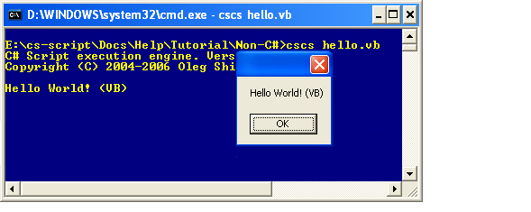

The following tutorial shows how to create an assembly which can be used by the script engine to provide access to additional CLR compilers. In this tutorial you will create CSSCodeProvider.dll, which will allow the script engine to execute C#, VB and JScript scripts depending on the script file extension.
| using System; using System.IO; using System.CodeDom.Compiler; using Microsoft.JScript; public class CSSCodeProvider { static public ICodeCompiler CreateCompiler(string sourceFile) { string errMsg = "Alternative compiler for file extension " + Path.GetExtension(sourceFile) + " cannot be created."; try { if (Path.GetExtension(sourceFile).ToLower() == ".cs") return (new Microsoft.CSharp.CSharpCodeProvider()).CreateCompiler(); else if (Path.GetExtension(sourceFile).ToLower() == ".vb") return (new Microsoft.VisualBasic.VBCodeProvider()).CreateCompiler(); else if (Path.GetExtension(sourceFile).ToLower() == ".js") return (new Microsoft.JScript.JScriptCodeProvider()).CreateCompiler(); } catch (Exception ex) { throw new Exception(errMsg, ex); } throw new Exception(errMsg); } } |
This command will create CSSCodeProvider.dll
| ' //css_reference System.dll; ' //css_reference System.Windows.Forms.dll; Imports System Imports System.Windows.Forms Module Module1 Sub Main() Console.WriteLine("Hello World! (VB)") MessageBox.Show("Hello World! (VB)") End Sub End M |

CSSCodeProvider can create and return an instance of either C#, VB or JScript compiler. Why these compilers? The answer is very simple: these three compilers are guaranteed to be available on any PC with .NET runtime installed. However, if on a particular PC the other CLR compilers are installed (C++, Delphi...), they can also be used with CS-Script. You would only need to modify the code of CSSCodeProvider.cs and compile it again.
In fact, it does not have to be an existing compiler. You can implement any compiler by yourself if you wish. Any compilers can be used with CS-Script as long as they support ICodeCompiler interface.
Note that System.dll and System.Windows.Forms.dll are referenced with //css_reference statement directly from the code. Because automatic assembly loading is not available for non-C# scripts (see Alternative Compilers for limitation details).
The same approach can be used to execute the J#/JScript "Hello world!" script. The command in command-prompt in this case will look as follows:
Where hello.js file contains the following code:
| //css_reference System.dll; //css_reference System.Windows.Forms.dll; import System; import System.Windows.Forms; public class Class1 { public static function Main() { Console.WriteLine("Hello World! (JScript)"); MessageBox.Show("Hello World! (JScript)") } } |
| public class CSSCodeProvider { public static ICodeCompiler CreateCompiler(string sourceFile) { return new Microsoft.VisualBasic.VBCodeProvider().CreateCompiler(); } } |
| public interface IScript { void Main(); } ... //indicate that the CS-Script engine should use custom (VB.NET) compiler CSScript.GlobalSettings.UseAlternativeCompiler = Assembly.GetExecutingAssembly().Location; ... string code = @"Imports System Imports System.Windows.Forms Public Class Script Public Sub Main() MessageBox.Show(""Hello World!"") End Sub End Class"; IScript script = CSScript.LoadCode(code) .CreateObject("Script"") .AlignToInterface<IScript>(); script.Main(); |
Alternative Compilers | Command-line interface